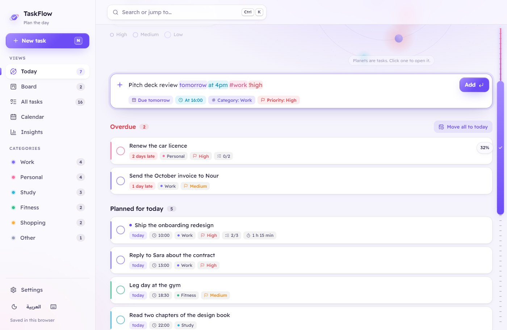
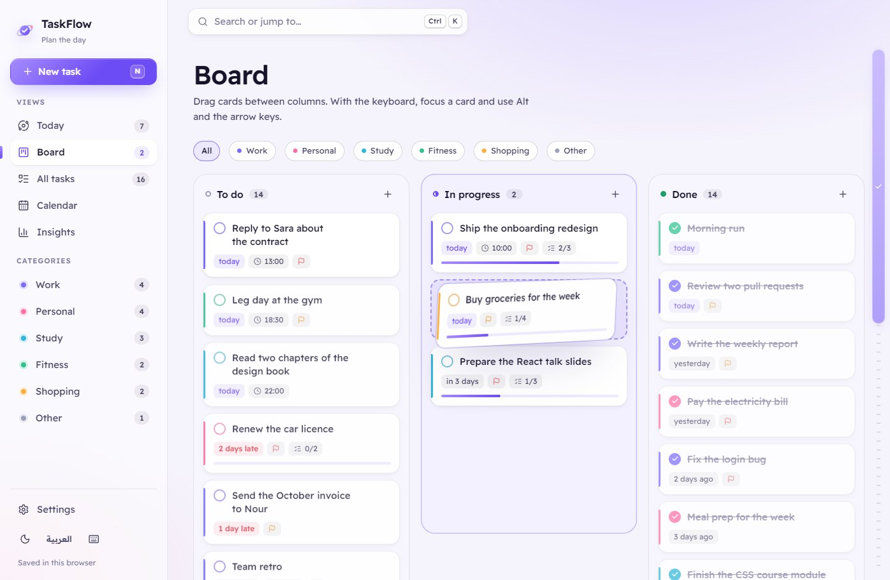
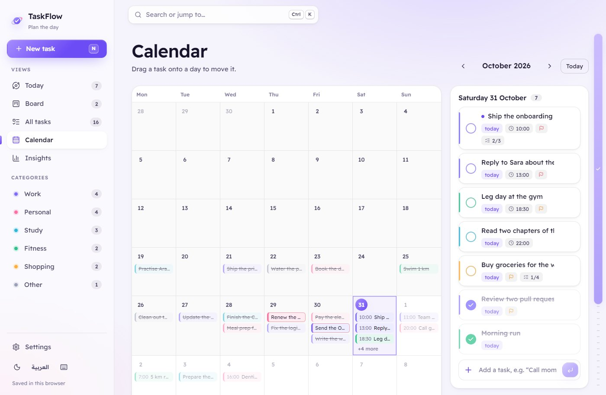
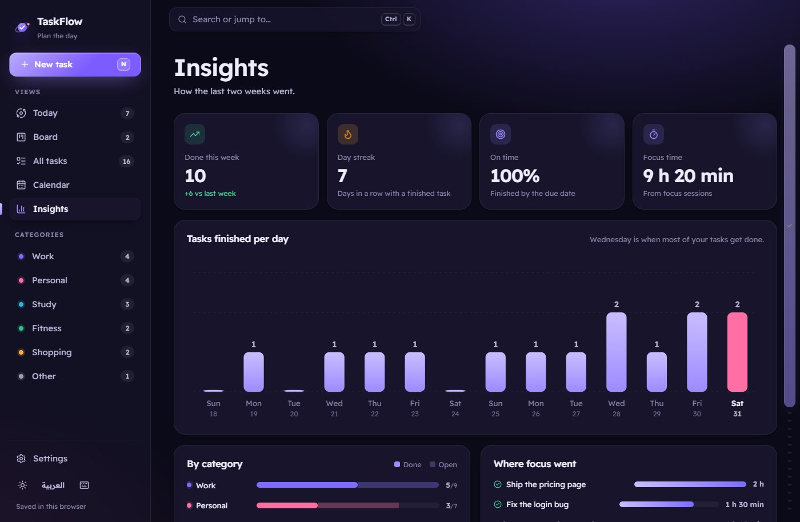
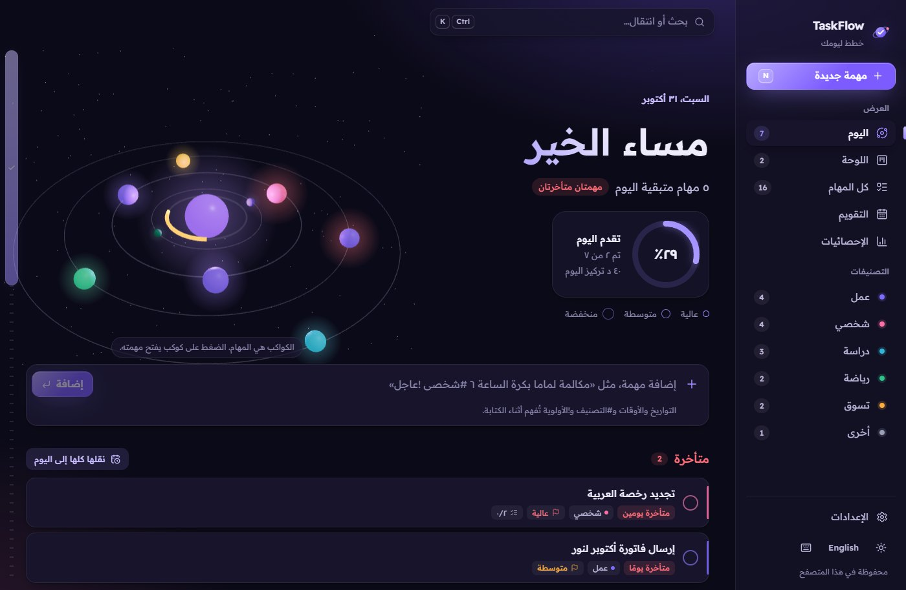

A task manager rebuilt in React with three.js. Today's tasks circle a glowing core as planets, and finishing one pulls it into the centre. Around it: quick add that reads plain English and Arabic, a board you can drag, a calendar and insights from the last two weeks.
Role
Design and development
Year
2026
Stack
React, JavaScript, three.js, React Three Fiber, React Router, Vite
A to-do list tells you what's on it, not how the day is going. The first TaskFlow had a dashboard of totals; the rebuild asks for something you can read at a glance: how much is left, what matters most and what's running late.
So today becomes a small solar system. Priority sets how close a task orbits, its category sets its colour, overdue work pulses red, and every finished task falls into the core. Adding tasks had to be just as quick, so you type the way you'd say it, in English or Arabic.
What it does
Today as a 3D orbit: hover a planet to see the task, click it to open it. Finishing a task pulls its planet into the core while the core's progress arc fills, and scrolling tips the system on its side.
Quick add that reads dates, times, #categories and !priorities as you type, in English or Arabic, colours them inside the field and shows how each was read.
A board with To do, In progress and Done. The dragged card leans as it moves, and Alt with the arrow keys moves a card from the keyboard.
A calendar where you drag a task onto a day to reschedule it. The week starts on Saturday in Arabic and Monday in English.
Insights: this week against last, the day streak, the share done on time, focus time, a 14-day chart and a breakdown by category.
25-minute focus sessions, a command palette on Ctrl + K, keyboard shortcuts, subtasks, Undo after deleting, and JSON export and import.
How it's built
React 19 and JavaScript with React Router and Vite, every page except Today loaded on demand. The orbit uses three.js through React Three Fiber in its own chunk, and stops drawing when it's off screen. The task list is a reducer of plain functions with tests, saved to the browser on every change; tasks from the first version are migrated on first load.
Typed in plain wordsRead into date, time, tags
One task listA tested reducer, saved locally
Orbit, board, calendarFour views of the same tasks
Decisions that shaped it
A parser instead of a form
Quick add lifts dates, times, categories and priorities out of the sentence with small rules for each, in both languages, and leaves the rest as the title. A time needs "at", "@" or am/pm, so "buy 3 apples" stays a title. It has its own tests in English and Arabic.
Highlighting inside a plain input
The field stays a normal text input, so typing, selecting and screen readers work as usual. Behind it sits a copy of the text with the recognised words coloured, scrolled in step with the input.
Dragging that works without a mouse
Board and calendar share one pointer-drag helper: a copy of the card follows the pointer and leans into the motion. Alt and the arrow keys do the same job from the keyboard, and each move is announced to screen readers.
3D that earns its place
The orbit is the day's summary, not decoration: ring for priority, colour for category, a pulse for late work. It loads in its own chunk, pauses off screen, follows the reduce-motion setting, and falls back to a flat drawing without WebGL.
Arabic written for everyone
Every string has an Arabic version with the right plural forms and Arabic-Indic digits, and the wording avoids commands addressed to one gender, so it reads right to every user. A test fails if a string is missing in either language.
Screens

Quick add reads the date, time, category and priority as you type and colours them in place.

Dragging a card on the board: it leans as it moves, and a slot shows where it will land.

The calendar, with the selected day's tasks beside it and undated tasks ready to drag onto a day.

Insights in the dark theme: this week against last, the streak, on-time share, focus time and a 14-day chart.

In Arabic: the layout flips right to left and the planets orbit the other way.
Screens show the sample tasks a first visit starts with.
By the numbers
4Views of the same tasks
34Automated tests
2Languages, LTR and RTL
0Accounts needed
Animations are off because your device is set to reduce motion.